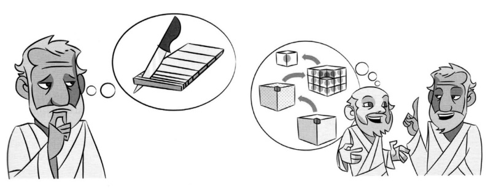
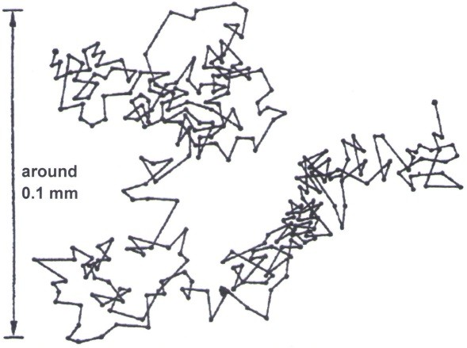
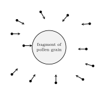

Models in Chemistry
Many chemical processes occur at a level that cannot be observed directly. Chemists therefore use models to connect macroscopic observations with explanations at the submicroscopic level. Different models are useful for different questions, and no single model can represent every aspect of reality.
Models are not exact copies of reality or permanent truths. They are evaluated by how well they explain observations and make useful predictions. A model may be revised or replaced when new evidence becomes available.
Describe three differences between the models.
Which features do all three models have in common?
Is one model simply the best?
What evidence supported Wegener’s idea that the continents had once been joined?
Which alternative explanations were accepted at the time for identical fossils being found on different continents?
Why do scientific models sometimes have to be revised?
A Small Experiment: Mixing Ethanol and Water
In this experiment, we compare the volumes of water and ethanol before and after mixing them. We then develop a model that can explain the observation.
Observation
1. Record the initial volume of each liquid.
2. Predict the final volume after the two liquids are mixed. Give a reason for your prediction.
| Water before mixing | Ethanol before mixing | Mixture after mixing |
|---|---|---|
Volume: mL | Volume: mL | Volume: mL |
A possible explanation
| Water before mixing | Ethanol before mixing | Mixture after mixing |
|---|---|---|
Origins of the Particle Model
The Greek thinkers
Ideas about particles are not new. More than 2,500 years ago, Greek thinkers asked whether a piece of matter could be divided indefinitely.

Democritus (c. 460--370 BC) and other early Greek philosophers argued that matter was made of extremely small units, which they called atoms, with empty space between them. This was a philosophical proposal rather than a conclusion based on experiments.
Aristotle and others favoured the idea that matter was continuous and completely filled its space. Aristotle's influence meant that particle-based explanations were not widely accepted in European natural philosophy for many centuries.
Robert Brown discovers the Brownian Motion

In the summer of 1827 the Scottish botanist Robert Brown was examining pollen grains which he had crushed and placed in water under his microscope. His aim was to study the process of fertilization in flowering plants. To his great surprise, the particles of the crushed pollen grains were moving around in the drop of water in which he had placed them before putting them under the microscope. This made it very difficult to observe them. Brown therefore studied this phenomenon further until he was sure that this movement arose neither from currents in the fluid nor from its gradual evaporation but belonged to the particles itself.
He continued his observations and found such movement in the particles of all fresh pollen. He saw this as a proof that the pollen grains were living bodies as he could think of no other reason why they would move in water.

However, as he continued his research he realised that this idea was not correct. He observed the movement even with particles of pollen grains from plants which had been stored for more than a century.
In the end, after examining powdered coal and glass as well and found out that the movement occurred in every material.
His report was met with great interest and the movement was called Brownian motion in his honour. However, an explanation of this phenomenon was only found nearly one hundred years later.
Today, Brownian motion is explained by the particle theory of matter. The pollen grain is much larger than the particles of the water in which it is placed. The pollen grain is hit by water particles from all sides at all times. When it is hit by many particles from one side, it will move in one direction for a short distance until it is hit by many particles from another side and changes its direction.

All substances are made of .
Particles of different substances differ in their .
There is between particles.
forces act between particles.
If the temperature increases, the particles move .